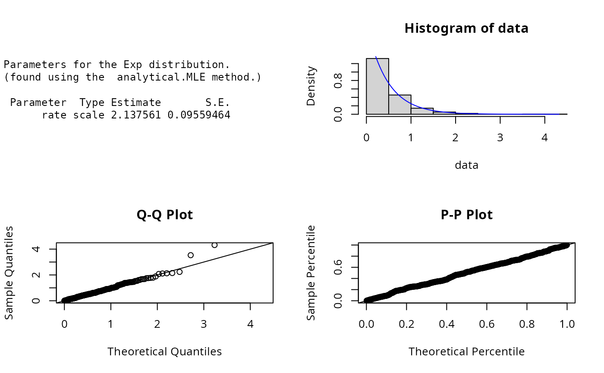
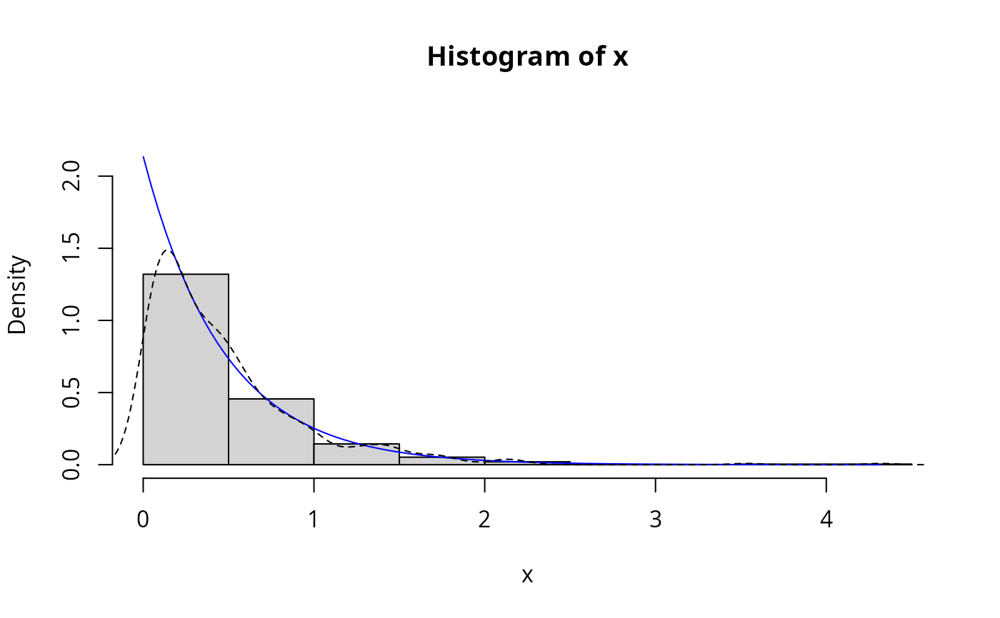

Exponential.RdDensity, distribution, quantile, random number generation and parameter estimation functions for the exponential distribution. Parameter estimation can be based on a weighted or unweighted i.i.d sample and is carried out analytically.
dExp(x, scale = 1, params = list(scale = 1), ...)
pExp(q, scale = 1, params = list(scale = 1), ...)
qExp(p, scale = 1, params = list(scale = 1), ...)
rExp(n, scale = 1, params = list(scale = 1), ...)
eExp(x, w, method = "analytical.MLE", ...)
lExp(x, w, scale = 1, params = list(scale = 1), logL = TRUE, ...)
sExp(x, w, scale = 1, params = list(scale = 1), ...)
iExp(x, w, scale = 1, params = list(scale = 1), ...)| x, q | A vector of sample values or quantiles. |
|---|---|
| scale | scale parameter, called rate in other packages. |
| params | A list that includes all named parameters |
| ... | Additional parameters. |
| p | A vector of probabilities. |
| n | Number of observations. |
| w | An optional vector of sample weights. |
| method | Parameter estimation method. |
| logL | logical; if TRUE, lExp gives the log-likelihood, otherwise the likelihood is given. |
dExp gives the density, pExp the distribution function, qExp the quantile function, rExp generates random deviates, and eExp estimates the distribution parameters. lExp provides the log-likelihood function.
If scale is omitted, it assumes the default value 1 giving the
standard exponential distribution.
The exponential distribution is a special case of the gamma distribution where the shape parameter
\(\alpha = 1\). The dExp(), pExp(),
qExp(),and rExp() functions serve as wrappers of the standard dexp,
pexp, qexp and rexp functions
in the stats package. They allow for the parameters to be declared not only as
individual numerical values, but also as a list so parameter estimation can be carried out.
The probability density function for the exponential distribution with scale=\(\beta\) is
$$f(x) = (1/\beta) * exp(-x/\beta)$$
for \(\beta > 0 \), Johnson et.al (Chapter 19, p.494). Parameter estimation for the exponential distribution is
carried out analytically using maximum likelihood estimation (p.506 Johnson et.al).
The likelihood function of the exponential distribution is given by
$$l(\lambda|x) = n log \lambda - \lambda \sum xi.$$
It follows that the score function is given by
$$dl(\lambda|x)/d\lambda = n/\lambda - \sum xi$$
and Fisher's information given by
$$E[-d^2l(\lambda|x)/d\lambda^2] = n/\lambda^2.$$
Johnson, N. L., Kotz, S. and Balakrishnan, N. (1995) Continuous Univariate Distributions,
volume 1, chapter 19, Wiley, New York.
Kapadia. A.S., Chan, W. and Moye, L. (2005) Mathematical Statistics with Applications, Chapter 8,
Chapman& Hall/CRC.
Jonathan R. Godfrey and Sarah Pirikahu.
# Parameter estimation for a distribution with known shape parameters
x <- rExp(n=500, scale=2)
est.par <- eExp(x); est.par
#>
#> Parameters for the Exp distribution.
#> (found using the analytical.MLE method.)
#>
#> Parameter Type Estimate S.E.
#> rate scale 2.137561 0.09559464
#>
#>
plot(est.par)

# Fitted density curve and histogram
den.x <- seq(min(x),max(x),length=100)
den.y <- dExp(den.x,scale=est.par$scale)
hist(x, breaks=10, probability=TRUE, ylim = c(0,1.1*max(den.y)))
lines(den.x, den.y, col="blue")
lines(density(x), lty=2)

# Extracting the scale parameter
est.par[attributes(est.par)$par.type=="scale"]
#> $scale
#> [1] 2.137561
#>
# Parameter estimation for a distribution with unknown shape parameters
# Example from Kapadia et.al(2005), pp.380-381.
# Parameter estimate as given by Kapadia et.al is scale=0.00277
cardio <- c(525, 719, 2880, 150, 30, 251, 45, 858, 15,
47, 90, 56, 68, 6, 139, 180, 60, 60, 294, 747)
est.par <- eExp(cardio, method="analytical.MLE"); est.par
#>
#> Parameters for the Exp distribution.
#> (found using the analytical.MLE method.)
#>
#> Parameter Type Estimate S.E.
#> rate scale 0.002770083 0.0006194094
#>
#>
plot(est.par)
# log-likelihood, score function and Fisher's information
lExp(cardio,param = est.par)
#> [1] -137.7776
sExp(cardio,param = est.par)
#> [1] 0
iExp(cardio,param = est.par)
#> [1] 2606420